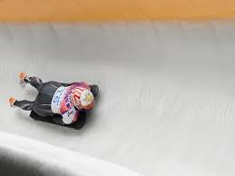
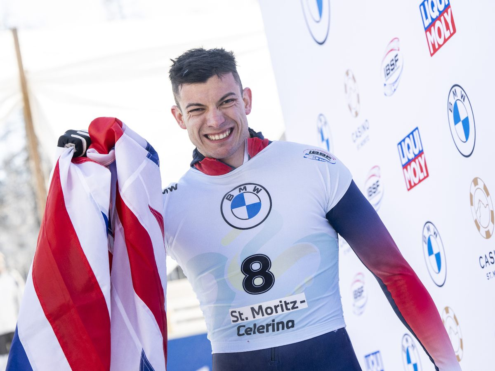
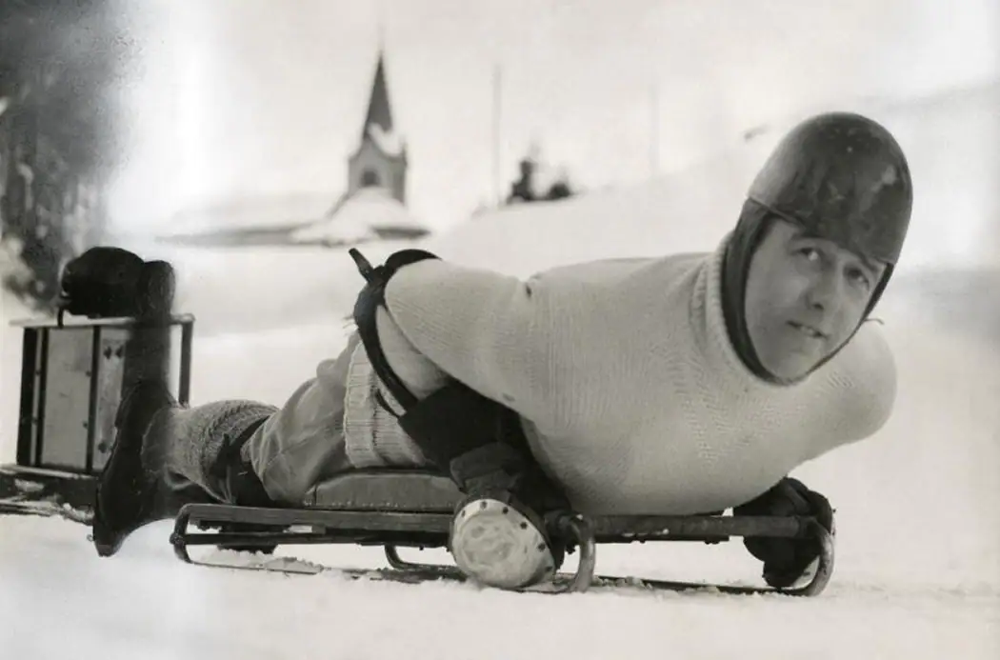
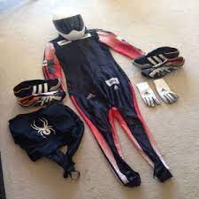

Skeleton is an interesting sport where you need to slide in a sled face down and head-first in a frozen track and get to the gold the shortest time possible. You first have a run start and than you need to take the fastest route from the start into the end. During elite racing the rider experiences accelerations up to 5 g and reaches speeds over 130 km/h (81 mph).

Previously, skeleton appeared in the Olympic program in St. Moritz, Switzerland, in 1928 and again in 1948. It was added permanently to the Olympic program for the 2002 Winter Olympics, at which stage a women's race was added.

The World Cup is the top level of international skeleton competition, and has the most stringent team quotas, with no teams receiving an automatic entry. To qualify, a team must have placed at least one athlete in the top 60 of the overall ranking table (top 45 for women); teams with two athletes in the top 50 (top 35 for women) receive two quota spots, and teams with three athletes in the top 30 (top 25 for women) receive three. The same athlete experience requirements as apply to the ICC also apply to the World Cup.[9] At the end of the World Cup season, the man and woman with the highest ranking, considering only points earned in World Cup races, are given a trophy known as the "Crystal Globe".

“The 'toboggans' used in Alpine countries at the end of the 19th century were inspired by Canadian/Indian sleds used for transport”. Various additions and redesigning efforts by athletes have led to the skeleton sleds used today. In 1892, L. P. Child introduced the “America”, a new metal sled that revolutionized skeleton as a sport. The stripped-down design provided a compact sled with metal runners, and the design caught on quickly. In 1902, Arden Bott added a sliding seat to help athletes shift their weight forward and backward, a feature that is no longer included on modern sleds.

alpine racing helmet with chin guard, or a skeleton-specific helmet
skin-tight racing speedsuit made of uncoated textile material
spiked shoes, similar to track spikes
goggles or face shields
optional elbow and shoulder pads under their suits
sled